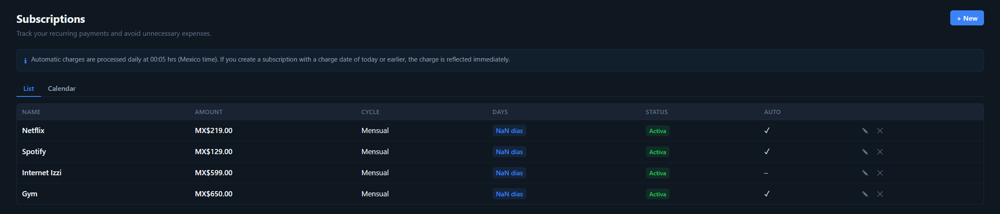

Why HomeLedger?
A privacy-first alternative to cloud apps like Mint, YNAB or Monarch.
Your data, your server
Everything lives in a local SQLite database you control. Nothing leaves your machine.
No cloud, no telemetry
No accounts to create, no tracking, no third parties reading your finances.
Free & open source
MIT licensed. No paid tiers, no upsells — fork it, self-host it, own it.
Runs anywhere
One Docker command on a home server, VPS, NAS, homelab or Raspberry Pi.
Installable PWA
Responsive, offline-capable, with quick-add and on-device camera receipt capture.
Bilingual
Full English / Spanish interface with a configurable install currency.
Everything a personal-finance app should have
Deep enough for power users, simple enough for everyone.
Accounts
Debit, credit, investment, cash and vouchers with dynamic balances and credit utilization.
Transactions
Income & expenses with tags, merchants, splits, month grouping, filters and CSV export.
Budgets
Category and tag budgets with rollover, alert thresholds and allocation-vs-spent progress.
Savings goals
Wishlist and debt goals with fund / withdraw actions and a completion forecast.
Subscriptions
Recurring payments with auto-charge, catch-up and a calendar view.
Loans
Principal, interest and term with an amortization schedule and payment tracking.
Net worth
Manual assets and liabilities on top of account balances, with a history chart.
Receipts & OCR
Upload or snap receipts/invoices (incl. CFDI), analyze them and create transactions.
Bank import
CSV / XLSX / OFX / QIF / JSON with parsers for BBVA, Santander and Nu, plus dedupe.
Rules
Auto-categorization engine with conditions, actions, test runs and learning suggestions.
Reports
Cash flow, savings rate, debt, credit utilization, merchant and custom saved reports.
Security
Offline TOTP 2FA, session management, scoped API keys, webhooks and an app lock.
See it in action
All screenshots use generated demo data — no real financial information is shown.



Tip: click any screenshot to open it full size.
Up and running in minutes
Pick the method that fits you — from one Docker command to a Home Assistant add-on.
Prebuilt image from Docker Hub
A self-contained multi-arch image (amd64 + arm64). One process serves the app + API on port 3000.
docker run -d \
-p 3000:3000 \
-v homeledger-data:/data \
-e JWT_SECRET="your-strong-random-secret-min-32-chars" \
-e ADMIN_EMAIL="admin@homeledger.local" \
-e ADMIN_PASSWORD="your-strong-password" \
-e DEFAULT_LOCALE="en" \
-e DISPLAY_CURRENCY="USD" \
--name homeledger \
irving1flores/homeledger:latestThen open http://localhost:3000. Only JWT_SECRET and ADMIN_PASSWORD are required — omit the rest to take the defaults (en / MXN).
Docker Desktop (no command line)
The image ships with demo defaults, so it runs with no env vars — but you must map the port.
- Open the Images tab and click Run on
irving1flores/homeledger. - Expand Optional settings.
- Under Ports, set Host port to
3000. - (Optional) Add a Volume → container path
/dataso your data persists. - (Optional) Set Environment variables
DEFAULT_LOCALE(en/es) andDISPLAY_CURRENCY(e.g.USD). - Click Run, then open
http://localhost:3000.
Demo login: admin@homeledger.local / changeme123 — change these for any real deployment.
Build from source with Docker Compose
git clone https://github.com/TastingRogue/HomeLedger.git
cd HomeLedger
cp .env.example .env
# Edit .env: set JWT_SECRET + ADMIN_PASSWORD (required),
# and optionally DEFAULT_LOCALE (en|es) and DISPLAY_CURRENCY (USD|MXN|…)
docker compose up -dCompose reads .env, so that file — not -e flags — is where you configure this deployment.
Home Assistant add-on
Runs the whole app inside Home Assistant (OS/Supervised), with the UI embedded in the sidebar via Ingress.
- Settings → Add-ons → Add-on Store → ⋮ → Repositories.
- Add
https://github.com/TastingRogue/HomeLedgerand close. - Install HomeLedger from the store (multi-arch: amd64 + aarch64).
- In Configuration, set
JWT_SECRETandADMIN_PASSWORD(and optionally locale/currency). - Start, enable "Show in sidebar", and open it.
A HACS custom integration can also expose your finances as HA sensors + services. See the Home Assistant guide.
Run from source (Node)
For local development. Requires Node.js ≥ 20 and npm ≥ 9.
git clone https://github.com/TastingRogue/HomeLedger.git
cd HomeLedger
npm install
cp .env.example .env # edit it — JWT_SECRET is required (min 32 chars)
npm run dev:backend # API on http://localhost:3000
npm run dev:frontend # Frontend on http://localhost:5173The first user you register becomes the admin. See CONTRIBUTING.md.
Full details in the Quick Start guide, the deployment docs, or the complete user manual.
Frequently asked questions
Is HomeLedger really free?
Yes — free and open-source under the MIT license. No paid tiers, no accounts, no upsells.
Does my financial data go to the cloud?
No. HomeLedger is self-hosted and local-first. Your data lives in a SQLite database on your own server, with no telemetry and no third-party cloud.
Can I run it on a Raspberry Pi?
Yes. The Docker image is multi-arch (amd64 + arm64), so it runs on x86 servers and 64-bit Raspberry Pi — and as a Home Assistant add-on.
Does it work on my phone?
Yes. It's a responsive, installable PWA with offline mode, a sub-5-second quick-add flow, and on-device camera receipt capture.
How do I keep my data safe?
Everything lives on a Docker volume. Export a full JSON backup any time, and admins can schedule automatic gzip database snapshots with in-app restore.
Enjoying HomeLedger?
HomeLedger is free and built in the open. If it saves you money or time, consider supporting its development — every ⭐ and sponsorship helps keep it maintained and independent. No pressure: it will always stay free.
Take back control of your finances
Free, open-source, and running on your own server in minutes.